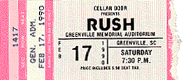

|
February 17, 1990 Memorial Coliseum. Greenville, SC
 Scan provided by Roy O'Grady
The Greenville News (Greenville SC)
Rumbles of Rush tour launch reverberating in Greenville Canadian rock trio Rush - Neil Peart, Alex Lifeson and Geddy Lee - has been taking advantage of its rental of Greenville Memorial Auditorium, using the facility to rehearse for its tour, which kicks off Saturday night in Greenville. The picture frames have been rattling off the walls at Greenville Memorial Auditorium this week, as Canadian rock trio Rush is inside plowing through rehearsal for its upcoming tour. Like .38 Special last year, Rush is kicking off its tour Saturday night in Greenville, having booked pre-concert rehearsal time at the auditorium for a few days before the show. The band has been rehearsing there since Tuesday night, said Chip Gray, the auditorium's executive director -- and, as he'll quickly attest, not exactly at soft volumes. Nor, exactly do Rush fans come in soft volumes. The first concert of the tour, which is in support of the band's new album "Presto," sold out Wednesday, pulling in ticket buyers from as far away as Canada, Detroit and Arkansas. Gray estimated that more than 1500 tickets (the auditorium holds 6800) were nabbed by fans outside the area, including several dozen from Ohio. "We had one guy call from New Jersey to charge his tickets," said Gray. "And then he asked, 'Do you know where the bus station is in Greenville?'" The rabid fan club comes to hear drummer Neil Peart, guitarist Alex Lifeson and vocalist/bassist Geddy Lee perform technically flawless yet emotionally soul-less hard rock. The new album, the group's 17th album over the last 15 years, is receiving more critical praise than many others in its discography. True, Peart's lyrics are literate and he's long been a drummer's drummer because of his technical facility and fancy work. But between the over-arrangement of the music and Lee's shrill and unconvincing vocals, it's hard to find the heart. Those who flock hundreds of miles to hear a Rush concert and gobble up their records must hear something different in the music. A sold out opening tour night is what every rock band dreams of and that's one of the reasons several groups opt to launch tours in Greenville, said Gray. "This place is so small for a rock show that it's a good bet to sell out," he said. "Pre-tour rehearsals at the auditorium look attractive because the building is easy to work in and relatively inexpensive to rent," said Gray. "Area hotel accommodations are reasonable, and it's a good market for rock 'n' roll," he added. Opening the Feb. 17 Rush concert will be Mr. Big, a driving rock quartet whose personnel has led to "supergroup" labels. The lineup is strong singer Eric Martin; gifted guitarist Paul Gilbert; Billy Sheehan, who three times has been named "Guitar Player" magazine's top rock bass player of the year; and touted session and tour drummer Pat Torpey. Although the foursome often lapses into typical power rock pitfalls -- especially recycled riffs and the more-is-better school of presentation -- the combination of Martin's soulful voice and Gilbert's guitar work sometimes catches fire. Mr. Big will make an appearance at Horizon Records Saturday afternoon. The band will be on hand 1-2:30 p.m. for "autographs and rock 'n' roll talk," said store owner Gene Berger.
The Greenville News (Greenville SC) February 17, 1990
Rush opens tour tonight in Greenville Rush hopes its spring North American tour will be "a treat, not a treatment." (The tour begins tonight at Greenville Memorial Auditorium; Mr. Big opens the show at 8 p.m. The tour will continue into April.) Rush hasn't been in a hurry to get back on the road. However, the fact that "Presto," its first album on Atlantic Records, was in the top 20 best selling charts in December and January, makes the Canadian trio more eager. Vocalist-bassist Geddy Lee says, "We're so happy with the way this album turned out, we're happy to go out there and tour it." "We've been doing this with this band for over 15 years now. I feel more and more need to have more and more time to myself, for my family, for my life outside this band. The whole prospect of long tours doesn't make me extremely happy any more. I like to play, but I need more of a balance in my life." Their previous album, "A Show of Hands," in 1989, was live, recorded during the tour after "Hold Your Fire," the last studio album, released by Polygram in 1987. Rush has found it difficult making live albums that don't sound like tape recorders are running, Lee says. "We figure the way around it is, every tour you're going to record a number of shows. You hope you'll get lucky and forget the machine is running and give a performance that is as natural as if it weren't. You're trying to trick yourself in to forgetting you're recording an album. "A lot of tracks on "A Show of Hands" were recorded from the last show we recorded, in Birmingham, U.K. The second-to-last night we also did a video shoot and there were a large number of cameras on stage. What I think happened was the next night the cameras were all gone so it almost felt like nothing was happening. Everybody relaxed. Everybody gave a very loose performance in relief that there was no camera pointed at us." When Rush began, Lee says, "We played more aggressive music. I think it was a function of our youth and the style of music we liked and what was cool. We still like aggressive rock. I think we still play it. It is just a bit tempered now by other influences. We grew up listening to power bands. I think power would be a little narrow in its description of Rush now. But I feel this album is a powerful album." Probably Rush's most decided change, Lee says, was from "Moving Pictures" in 1981 to "Signals" in 1982. "We changed the focus from guitar-dominant to adding more synthesizers. We went from a three-piece to a four-piece, though we are only three people. We experimented with that for quite a few albums, up to this album where we made a decided shift back. "It felt really good to go back to writing as a three-piece and using technology just to enhance moments as backdrop to a fundamental three-piece sound. There were a few moments we couldn't resist sneaking back into it. By and large it's written as a three-piece record." As for his singing, Lee says he went through a period of screechy singing and another where he tried to lower his range and screech less. "To me, singing well is a lot more of a priority than it used to be. I used to be another instrument in the sound. A lot of material in this album was written around vocal melodies. "We wanted the emphasis on this new album to be strong vocally, melodically and emotionally." Rupert Hine produced "Presto" with Rush. "The point of using a new producer every once in a while is you learn some new tricks," Lee says. He quit smoking in 1983. Even so, he says, he had trouble keeping his voice healthy on the last tour, in 1987 and '88. "I don't know if it was winter or getting older. I find I have to baby my voice more than I did when I was younger." If there's any wisdom to pass on, Lee says, it is, "The more time you take for writing, the better. That's your script." Lee and guitarist Alex Lifeson write music, and drummer Neil Peart writes lyrics. "Presto" was completed ahead of schedule. "I think it was because of the amount of preparatory work we did. You have to make sure your songs are really sounding good even at the rough demo stage. And you've got to be careful you don't overdo to the point you don't have a feel left for your songs. Then you're in good shape, I think." Lee says Rush enjoyed working with Hine and engineer Stephen Tayler. "The longer you're in the business the more you realize that the time you spend working is not apart from your life. It's part of your life. You want to make sure you're using your time well." "It's a lot more rewarding when it's pleasurable." |